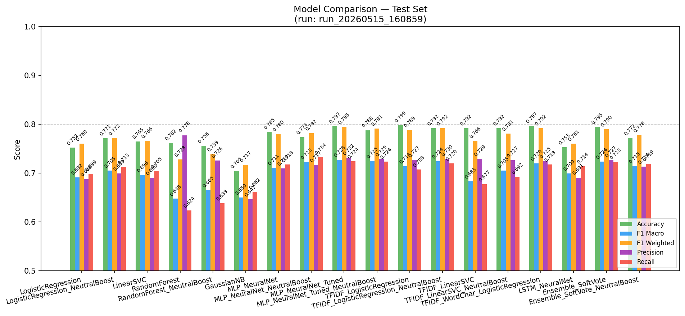
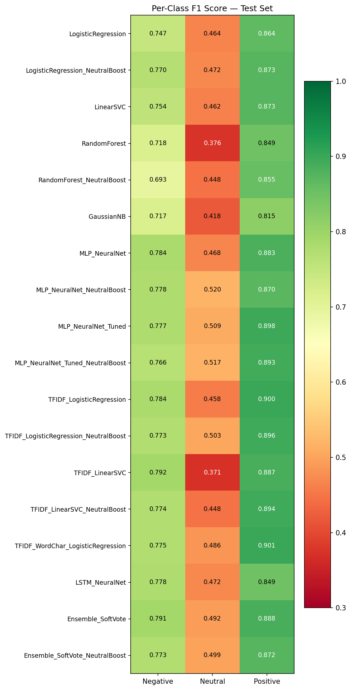
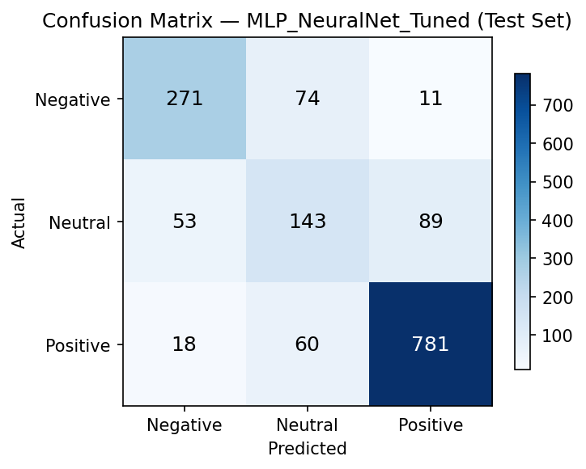

Split: 70% train / 15% val / 15% test · 10,000 samples total
| Model | Accuracy | F1 Macro | F1 Weighted | Precision | Recall |
|---|---|---|---|---|---|
| ⭐ MLP Neural Net | 85.6% | 0.780 | 0.853 | 0.793 | 0.769 |
| Ensemble (Soft Vote) | 85.3% | 0.775 | 0.851 | 0.783 | 0.768 |
| Linear SVC | 84.1% | 0.726 | 0.831 | 0.769 | 0.706 |
| Random Forest | 82.2% | 0.720 | 0.808 | 0.799 | 0.682 |
| Logistic Regression | 80.5% | 0.726 | 0.817 | 0.714 | 0.760 |
| Gaussian NB | 74.7% | 0.665 | 0.765 | 0.659 | 0.703 |


| Class | F1 |
|---|---|
| Positive | 0.921 |
| Negative | 0.797 |
| Neutral | 0.621 |
Neutral class is the hardest — only 163 test samples (10.9%). All models struggle here regardless of architecture.

256 → 128 → 64 hidden layers
Adam optimizer
Early stopping on val loss